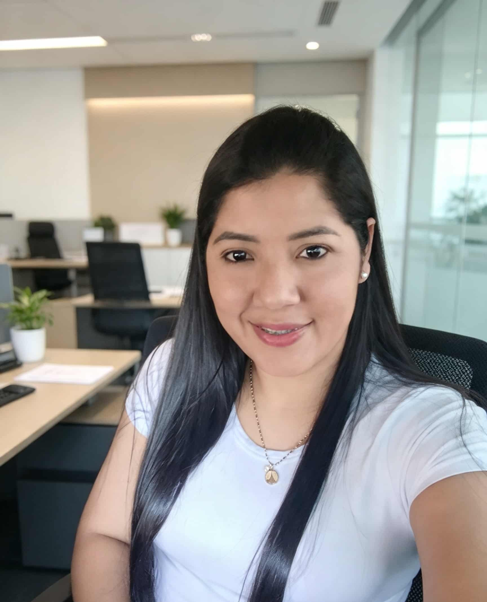

Edismar Guzmán
Sobre Mim
Sou venezuelana e moro no estado de Minas Gerais, Brasil. Atualmente, estou estudando Desenvolvimento Web na BYU-Pathway Worldwide, uma universidade pela qual tenho grande apreço. Sou apaixonada pela área da tecnologia e estou sempre buscando aprender e desenvolver novas habilidades. Meu objetivo é criar sites funcionais, modernos e visualmente atraentes, que ofereçam uma boa experiência aos usuários. Estou no início dessa jornada, mas sigo dedicada a aprender, crescer profissionalmente e transformar meus conhecimentos em projetos que façam a diferença
Minha Cidade
Vespasiano fica perto de Belo Horizonte, uma cidade tranquila e acolhedora. Gosto de aprender coisas novas e me desenvolver a cada dia.
